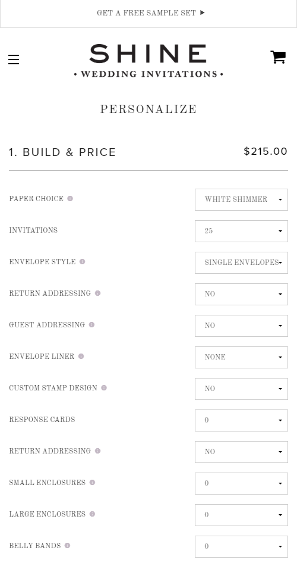

Shine is a boutique online wedding stationary store based out of Rochester, NY. Rapidly growing year over year this small company gave me an exciting atmosphere to hold real responsibility while impacting the codebase in a big way.
I worked using Node.js to built tools and refactor legacy code. My first project was to create a JavaScript module to manage the access pipeline between products and price tables. Like BMW, Shine practices “On demand manufacturing” meaning the customer chooses from a multitude of options for each Wedding Invitation, then Shine prints that Invitation on demand.
Without the flexibility of modern computing this level of customer customizability wouldn’t be possible, and along with this wonderful service comes a large interweaving system of code. Each of Shine’s over twenty wedding invitations has a specific system to match the options selected to a price, additionally all these prices need to be carefully managed by the marketing team which limits the programmers from programming simple rules for each option.

A large majority of what I worked on at Shine was focused around refactoring these pricing modules. I used a dependency graph tool to analyze the connections between hundreds of classes, I then refactored this system to have no more circular dependencies.
Once the connections between these classes was cleared up I further understood what each class was used for in order to condense multiple classes into interfaces and implementations. In the end I was able to drastically reduce the complexity and size of the product/price table code base.
During my last month working at Shine I was solely responsible for starting the 5th iteration of their ecommerce store. With many meeting discussing design desisions and technology options I left Shine with a solid base to built their future core website off of.